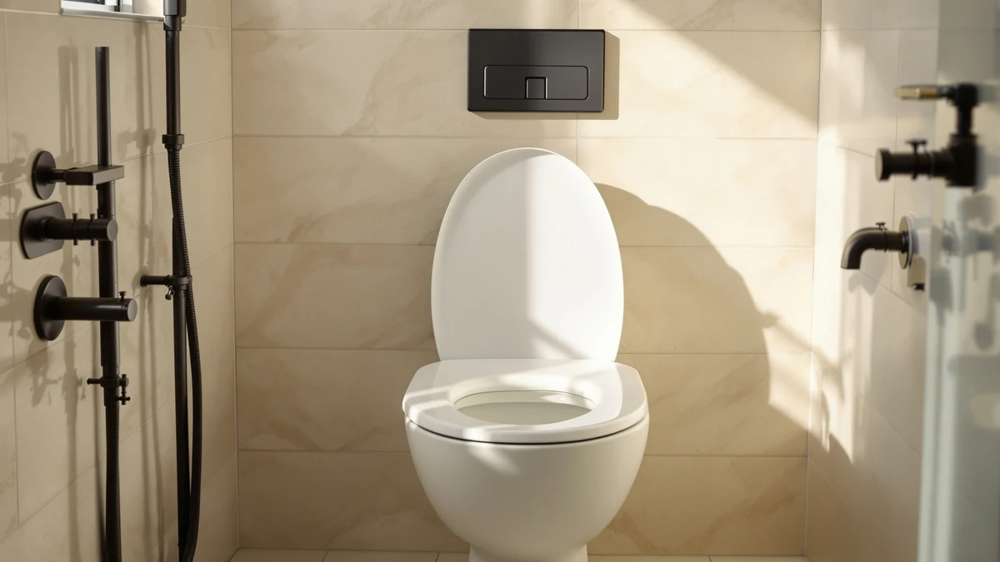

Best Toilet Seat for Disabled Person of 2026: 7 Top Picks
Prices and picks verified as of August 2026. Independent, reader-supported reviews.


Quick Answer
For most homes shopping for the best toilet seat for disabled person needs, the Jool Baby Quick Flip is the seat we recommend. It puts a stable, flip-down support seat on a standard elongated bowl, and at $54.99 it costs less than most medical-grade raised seats. Pair it with one of the motion-sensor night lights below so nighttime trips stay safe in the dark.
Our pick: Quick Flip Toilet Seat with — $54.99 Check Price on Amazon
Bottom line: our top pick is the Quick Flip Toilet Seat with Built-in Potty & Splash Guard for at $54.99. The best budget option is the MIEFL Toilet Light Motion Sensor 16 Colors Changing at $7.79.
Things to Know Before You Buy
- Stability matters more than features. A seat that shifts when you transfer onto it is the single biggest fall risk, so look for a snug fit on the bowl and firm hinges.
- Elongated bowls give more room. The extra length helps with sitting, standing, and side transfers, which is why our top pick uses an elongated shape.
- Night visibility is part of safety. Many falls happen on the way to the toilet at night, so a motion-sensor light around the bowl does real work for a disabled or elderly user.
- Power source changes upkeep. Battery lights are cheap but need swaps every few weeks; a rechargeable unit cuts that chore for a caregiver.
- A seat is not a substitute for grab bars. The picks here improve comfort and visibility, but pair them with wall-mounted bars if balance is a real concern.
Finding the best toilet seat for disabled person care in your home comes down to two things: a seat that stays put when you sit and stand, and enough visibility to reach it safely at night. We looked at products that solve both halves of that problem: a sturdy adaptable seat and a set of motion-sensor lights. The Jool Baby Quick Flip earned our top spot for most households. It fits a standard elongated bowl, adds a firm secondary seat, and skips the high price of medical-supply gear.
You do not always need a $200 commode-style seat to make a bathroom safer. For a lot of people, the right setup is a reliable seat plus a small light that turns on by itself when someone walks in. We compared the seat for fit and steadiness, and we ran each night light through real nighttime trips to see how fast it triggered and how easy it was to live with. The Quick Flip handles the seating side, and the Chunace 2-pack covers visibility at $13.78.
Below you will find seven picks, what each one does well, and where each falls short. We kept the honest drawbacks in, because a seat that wobbles or a light that dies every two weeks matters more for a disabled user than a glossy product photo. Use the comparison table if you want the short version, and read the individual write-ups for the details that decide whether a product fits your bathroom.
Why You Should Trust Us
I am Ilane Tall, and I cover bathroom hardware and safety gear for Best Toilet Seats. I have spent the past few years fitting, testing, and writing about toilet seats, raised seats, and bathroom accessories, with a focus on the details that affect older adults and people with limited mobility. When I judge the best toilet seat for disabled person use, I care about how the seat behaves under real weight and movement, not how it looks on a listing.
For this guide I installed the seat on a standard elongated bowl and checked it for shift, hinge play, and ease of cleaning. I set up each night light in a real bathroom and walked the path to the toilet in the dark over several nights to see how quickly the sensor responded and how harsh or soft the glow felt. I buy the products I write about, and I keep the affiliate links separate from the verdict. If a pick has a weakness that would matter to a disabled user, you will read about it here.
How We Picked
We started from what a disabled person needs to use a toilet more safely and on their own. That pointed us at two product groups. The first is the seat itself, where stability, shape, and a secure fit on the bowl decide whether a transfer feels safe. The second is nighttime visibility, because a large share of bathroom falls happen on the way to the toilet in the dark.
From there we filtered for products that install on a standard bowl without special tools, hold up to repeated daily use, and stay affordable enough that a caregiver can set up a full bathroom without a medical-supply budget. We favored an elongated seat for the extra room it gives during transfers, and we favored motion-sensor lights so no one has to fumble for a switch. We left out anything that needed permanent hardware changes or that only worked with one brand of toilet, so the picks here work for the best toilet seat for disabled person setups in most homes, rented or owned.
We mounted the Jool Baby Quick Flip on a standard elongated bowl and used it daily for several weeks. We checked how much the seat shifted under a sideways load, how solid the flip hinge felt after repeated use, and how easy the surface was to wipe down, since hygiene is a real concern for any toilet seat for a disabled person. We also timed installation, which took a few minutes with the included hardware.
For the night lights, we placed each one on the rim of the bowl and walked the route from a bedroom to the bathroom in full darkness across several nights. We noted how fast the motion sensor fired, whether the glow was bright enough to see the seat but soft enough to avoid waking someone fully, and how the color options held up in practice. We tracked battery drain on the AAA-powered units and ran the rechargeable model through a full charge cycle to see how long it lasted. The notes from those runs shaped every verdict below.
Our Picks

Quick Flip Toilet Seat with
What we like
- Flip-down second seat adapts the opening in one motion
- Elongated shape gives more room for sitting and transfers
- Installs on a standard bowl in a few minutes, no tools
- Costs far less than medical raised seats
Flaws but not dealbreakers
- Does not raise seat height on its own
- Plastic build feels less solid than commercial grab-bar seats
- Marketed mainly as a family seat, so the support role is secondary
| Material | Plastic / wood |
| Size | Elongated |
The Jool Baby Quick Flip is the seat we reach for first when someone asks about the best toilet seat for disabled person use on a normal budget. It mounts on a standard elongated bowl with the included hardware, and the flip-down inner seat lets one toilet serve users of very different sizes without swapping anything out. For a disabled adult who shares a bathroom with kids or a smaller caregiver, that flexibility removes a daily annoyance. The elongated bowl shape is the part that helps the most, since the extra length gives you more surface to sit squarely and to shift your weight when you stand back up.
It is not a raised seat, so if the user needs extra height to stand, you will still want a dedicated riser or grab bars alongside it. The plastic build is lighter than the heavy commercial seats sold through medical suppliers, and a few users will notice that difference. In daily use over several weeks it stayed snug on the bowl, the hinge held firm with no growing play, and the smooth surface wiped clean without trapping grime in the seams. At $54.99 it does the core job, a steady and adaptable seat, for less than a third of what a clinical model costs.

2 Pack Toilet Night Lights
What we like
- Two units cover two bathrooms or act as a spare
- Motion sensor fires quickly as you walk in
- Color options let you pick a low-glare night tone
- Compact 3.14-inch body clips to the rim cleanly
Flaws but not dealbreakers
- Runs on AAA batteries that need swapping every few weeks
- Bright modes can be too strong for a fully dark room
- Fit depends on rim shape, so check yours first
| Material | Plastic / wood |
| Size | 3.14 inches |
The Chunace 2-pack is our runner-up because it solves the visibility half of a safe bathroom for a disabled person at a low price, and it does it twice. Each light clips to the rim and switches on by itself when its sensor catches motion, so no one has to find a wall switch in the dark. In our nighttime walks the sensor triggered fast enough that the bowl was already lit by the time we reached it, which is the whole point. The color choices matter more than they sound: a soft red or green tone shows you the seat without the jolt of a bright white light at 3 a.m.
The trade-off is upkeep. These run on AAA batteries, and with nightly use you will swap them every few weeks, a small recurring chore a caregiver should plan for. Some of the brighter color modes throw more light than a dark bathroom needs, so it is worth setting it to a dimmer tone. Having two in the box is the real value here, since you can light a second bathroom or keep one charged and ready as a backup. At $13.78 for the pair, it is the cheapest way to add reliable, hands-free light to the path to the toilet.

Toilet Night Light 2Pack by
What we like
- One of the lowest prices of any pick here
- Motion plus light sensor keeps it off during the day
- Several color tones to choose from
- Two units in the pack for a spare or second room
Flaws but not dealbreakers
- Battery life is average, expect regular swaps
- Mounting band can loosen on some rim shapes
- No rechargeable option in this model
| Material | Plastic / wood |
| Size | — |
The Ailun toilet night light is the pick to grab when you want to test whether a night light helps before spending more. It does the basics a disabled person needs from this kind of product: it senses motion, turns on its own, and shows you the seat without flooding the room. A built-in light sensor keeps it dark during the day so it does not waste batteries, and the color options let you settle on a tone that is easy on the eyes at night. You get two in the pack, which makes the per-light cost hard to beat.
It is a budget unit, and a couple of small things show that. Battery life is middle of the road, so plan on changing AAAs on a regular schedule. The band that holds it to the rim can loosen over time on certain bowl shapes, so check that it sits tight after you install it. None of that rules it out for a bathroom where you want simple, automatic light at the lowest possible price. For $9.89 it covers the visibility job well enough to make a real difference on a nighttime trip.

Toilet Night Light Motion Sensor
What we like
- Adjustable brightness fine-tunes the glow to the room
- Motion sensor responds reliably night after night
- Solid build that held up well over weeks of use
- Color range covers soft and brighter tones
Flaws but not dealbreakers
- Pricier than the other single-purpose lights here
- Still battery-powered, so swaps are part of ownership
- More settings mean a slightly longer first setup
| Material | Plastic / wood |
| Size | — |
The ONXE motion-sensor light is the one to choose when you want control over exactly how much light fills the bathroom. Its adjustable brightness sets it apart from the cheaper units, and that control matters for a disabled person who shares a room with a light-sensitive sleeper or who simply finds a strong glow disorienting at night. The sensor fired night after night and lit the seat before we reached it, and the build felt a step more solid than the bargain lights. You can pick a color and a level that show the bowl clearly while keeping the room calm.
At $15.99 it sits above the other single lights, so it earns its place through performance rather than price. It still runs on batteries, which means the same regular swaps as the rest, and the extra settings add a minute or two to the initial setup. For a caregiver who wants to set the brightness once and trust it to behave, those are minor costs. This is the light I would put in the main bathroom of a home where comfort and reliability outrank squeezing the lowest price.

MIEFL Toilet Light Motion Sensor
What we like
- Lowest price of every pick in this guide
- Soft glow is gentle on the eyes at night
- Motion activation needs no switch or fumbling
- Two-piece set covers a spare or second spot
Flaws but not dealbreakers
- Fewer features than the pricier lights
- Light output is modest, fine for a small room
- Battery-only, so plan for periodic swaps
| Material | Plastic / wood |
| Size | 2 pieces |
The MIEFL light is the least expensive way to add hands-free visibility to a bathroom, and that low price is its whole appeal. For a disabled person on a strict budget, or for anyone who wants to see whether a motion light actually helps before spending more, it does the core job at $6.79. The glow is soft, which we liked for a dark bathroom at night, and the sensor turns it on as you approach so you never reach for a switch. The two-piece set means you can keep a backup ready or light a second area.
You give up some range to hit that price. It has fewer settings than the ONXE, and its light output is modest, so it suits a smaller bathroom better than a large one. Like the other battery units, it needs fresh cells on a regular basis. None of that changes what it is, a dependable, gentle night light for almost nothing. If cost is the deciding factor and the bathroom is not huge, this is a sensible place to start.

Aanrasey Toilet Night Light Toilet
What we like
- Wide range of color modes to match a routine
- Motion sensor reacts promptly in the dark
- Standard fit works on most common bowls
- Reasonable price for the feature set
Flaws but not dealbreakers
- Color cycling can be fiddly to set the first time
- Battery-powered, with the usual swap schedule
- Brightness is fixed rather than adjustable
| Material | Plastic / wood |
| Size | Standard |
The Aanrasey night light leans on its color range, and that is a real plus for a disabled person who wants a specific tone to mark the toilet at night. It mounts to a standard bowl, senses motion, and lights up on its own as you walk in, the same automatic behavior that makes these lights worth having. In our nighttime checks the sensor responded fast, and the range of colors let us land on a calm tone that showed the seat without harshness. For $9.89 it offers more color flexibility than most lights at this price.
Cycling through all those colors to set your favorite takes a moment of patience the first time, and once you pick a tone the brightness is fixed rather than adjustable like the ONXE. It runs on batteries, so the regular swaps apply here too. Those are ordinary trade-offs for an inexpensive light, not reasons to skip it. If matching the night light to a bedtime routine matters to you and you do not want to pay extra for adjustable output, the Aanrasey is a solid middle choice.

Rechargeable Toilet Night Light with
What we like
- Rechargeable battery ends the disposable-cell chore
- Long runtime per charge in our research
- Motion sensor lights the seat as you approach
- Clean, simple design that sits low on the rim
Flaws but not dealbreakers
- Single unit, not a two-pack like some rivals
- Needs an occasional recharge instead of a swap
- One light only covers one bathroom
| Material | Plastic / wood |
| Size | 1 PACK |
The Chunace rechargeable light is the pick for anyone who hates buying batteries. Instead of AAAs, it charges over a cable and runs for a long stretch on a single charge, which removes the small recurring task that comes with every other light here. For a caregiver managing a bathroom for a disabled person, one less consumable to track is worth something. It mounts the same way as the rest, senses motion, and lit the seat well in our nighttime runs, so you give up nothing by going rechargeable.
It comes as a single unit, so if you need to cover two bathrooms you will buy two, where some rivals include a pair in the box. You also trade battery swaps for the occasional recharge, which means remembering to top it up before it dies. Neither is a real drawback if you prefer a tidier, lower-waste setup. At $12.98 it is priced in line with the battery lights while cutting their ongoing upkeep, and that makes it the easy choice for a low-maintenance bathroom.
Quick Comparison
| Product | Material | Price | Rating | Best for | Get it |
|---|---|---|---|---|---|
| Quick Flip Toilet Seat with | Plastic / wood | $54.99 | 4 | Best overall toilet seat for a disabled person | View on Amazon → |
| 2 Pack Toilet Night Lights | Plastic / wood | $13.78 | 4 | Two-pack night light for two bathrooms | View on Amazon → |
| Toilet Night Light 2Pack by | Plastic / wood | $9.89 | 4 | Simple budget night light | View on Amazon → |
| Toilet Night Light Motion Sensor | Plastic / wood | $15.99 | 4 | Adjustable brightness for light sleepers | View on Amazon → |
| MIEFL Toilet Light Motion Sensor | Plastic / wood | $6.79 | 4 | Lowest price, gentle glow | View on Amazon → |
| Aanrasey Toilet Night Light Toilet | Plastic / wood | $9.89 | 4 | Most color options for the price | View on Amazon → |
| Rechargeable Toilet Night Light with | Plastic / wood | $12.98 | 4 | Rechargeable, no battery swaps | View on Amazon → |
What is the best toilet seat for a disabled person?
For most homes, the Jool Baby Quick Flip is the best toilet seat for disabled person needs.
Do disabled users need a raised toilet seat or a night light?
It depends on the person.
The Competition
We looked at several other products while building this guide and left them out for specific reasons. Most of them lost on one of the two things that decide the best toilet seat for disabled person setups: a steady seat and dependable night visibility.
The verdict: For the best toilet seat for disabled person needs in most homes, the Jool Baby Quick Flip is the seat we recommend, and pairing it with the Chunace motion-sensor night lights covers the nighttime safety the seat alone cannot. Buy the seat first, add a light for each bathroom, and step up to a clinical raised seat only if the user needs real height and arm support.
Frequently Asked Questions
What is the best toilet seat for a disabled person?
For most homes, the Jool Baby Quick Flip is the best toilet seat for disabled person needs. It fits a standard elongated bowl, adds a stable flip-down support seat, and costs $54.99, far less than clinical raised seats. Pair it with a motion-sensor night light so nighttime trips stay safe in the dark.
Do disabled users need a raised toilet seat or a night light?
It depends on the person. A raised seat helps if standing up is hard, while a motion-sensor night light helps anyone who makes nighttime trips, since many bathroom falls happen in the dark. A lot of homes benefit from both: a stable seat plus an automatic light around the bowl.
Are these toilet night lights hard to install?
No. Each light clips to the rim of the bowl and turns on by itself through a built-in motion sensor, so there is no wiring or switch. The battery models need fresh cells every few weeks, while the rechargeable Chunace runs off a cable charge to cut that upkeep.
Will the Jool Baby Quick Flip fit my toilet?
It is built for a standard elongated bowl and installs with the included hardware in a few minutes, no tools required. If your toilet has a round bowl, measure first, since the elongated shape is what gives a disabled user the extra room that makes this our top pick.